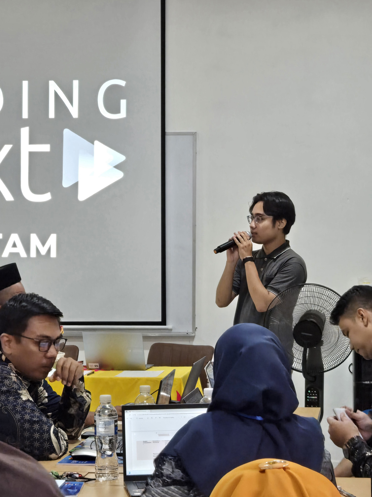
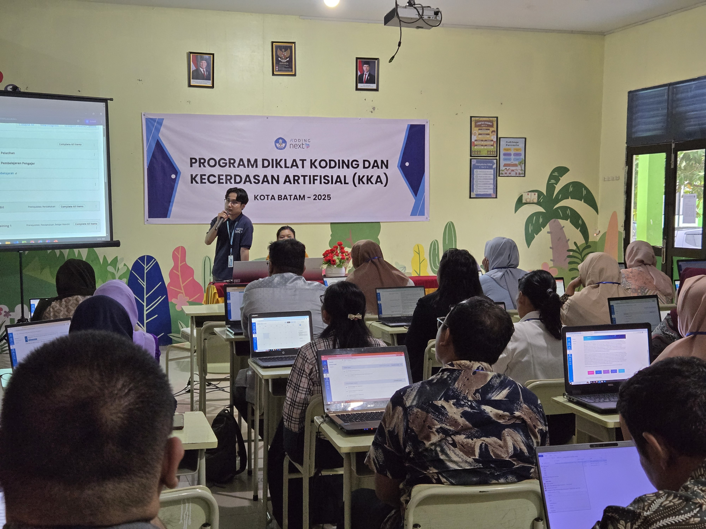
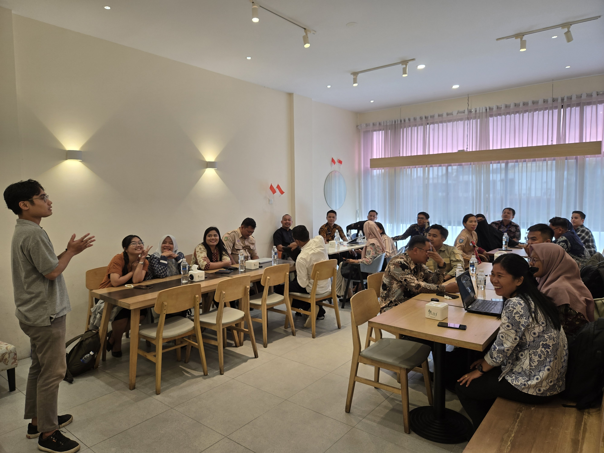
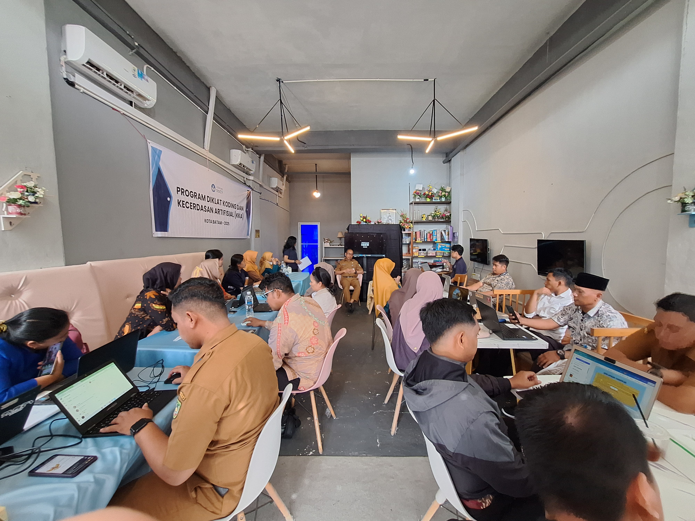
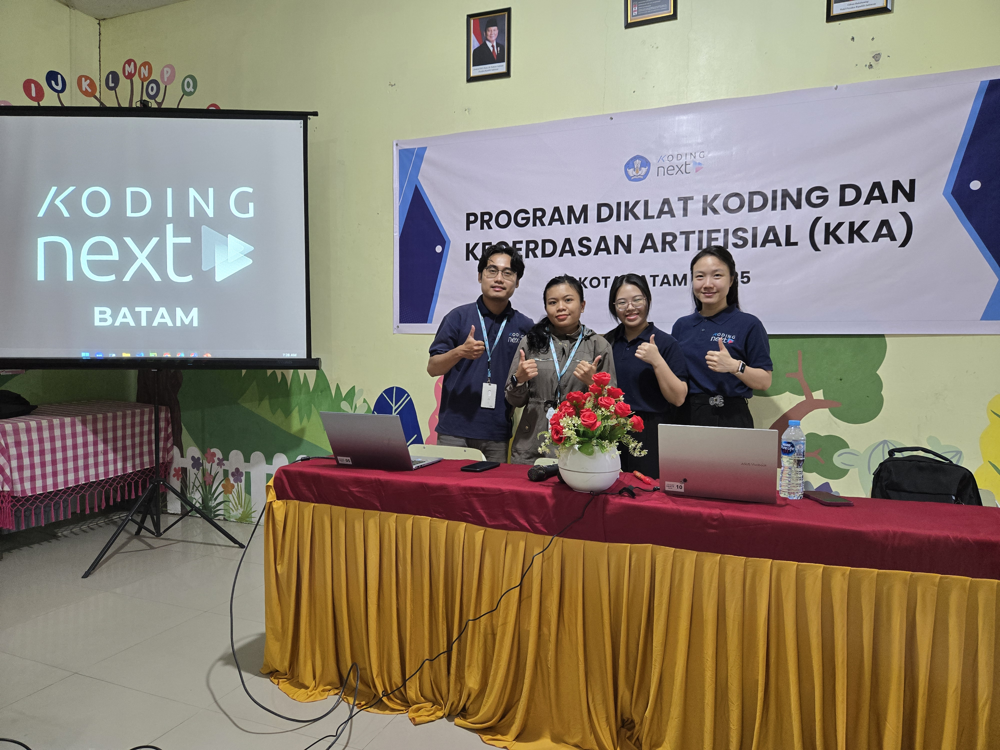

Coding & AI Educator Certification Program
Master Trainer & Instructor leading IN-1, ON-The-Job Training evaluation, and final certification for 78 elementary school teachers across Batam_04, Batam_05, and Batam_06 cohorts.
26 Teachers per Batch
5 Days Intensive Training
Classroom Projects
Full Scope Delivery
Program Overview & Partnerships
National Curriculum Implementation in Batam
Initiated by KEMENDIKDAS Indonesia (Ministry of Primary and Secondary Education) in partnership with Dinas Pendidikan Kota Batam, this training program equips elementary educators to teach Coding and AI.
As a Master Trainer representing Koding Next Batam alongside my co-instructor, I was responsible for delivering the 5-day IN-Service Training 1 (In-1), evaluating the 102 JP ON-The-Job Training (OJT) classroom projects, conducting the final IN-Service Training 2 (In-2) evaluations, and issuing official certification decisions.
Three-Phase Training Lifecycle
Structured according to national teacher professional development standards.
IN-Service Training 1
⏱️ 5 Days • 8 Hours/Day (40 Hours)
Direct classroom delivery of 5 core modules, group discussion breakouts, Q&A sessions, and hands-on lab exercises hosted at Koding Next Batam.
ON-The-Job Training
⏱️ 102 JP Total • 12 Weeks Implementation
Teachers return to their respective schools to apply Modules 2–4 with students, record lesson execution, and draft best practice reports (Praktik Baik).
IN-Service Training 2
⏱️ Final Examination & Defense
Comprehensive evaluation, grading project portfolios, reviewing classroom report defenses, and issuing pass/fail decisions for official certification.
Workshop Highlights
Filter by instructor role or individual batch cohorts.
Instructor & Evaluator Activities

Direct Instruction & Module Lectures
Presenting official KEMENDIKDAS curriculum modules on Coding, AI concepts, and Computational Thinking.

Facilitating Q&A & Group Work
Guiding small group discussions and evaluating problem-solving approaches.

Portfolio & Report Evaluation

IN-2 Assessment & Pass Decision

Koding Next Batam Team
5 Core Curriculum Modules
Delivered during IN-1 and evaluated through OJT project implementations.
Coding & Artificial Intelligence Subjects in the National Curriculum
Modul 1: Mata Pelajaran Koding dan Kecerdasan Artifisial pada Kurikulum Nasional
Alignment with KEMENDIKDAS national education policy, curriculum structures, learning outcomes, and time allocation for elementary schools.
Computational Thinking as the Foundation of Coding & AI
Modul 2: Berpikir Komputasional sebagai Dasar Koding dan Kecerdasan Artifisial
Decomposition, pattern recognition, abstraction, and algorithm design tailored for young learners.
Basic Concepts of Artificial Intelligence
Modul 3: Konsep Dasar Kecerdasan Artifisial
Fundamentals of machine learning, data recognition, computer vision basics, and age-appropriate AI principles.
Practical Application & Utilization of Artificial Intelligence
Modul 4: Pemanfaatan Kecerdasan Artifisial
Generative AI tools for elementary lesson plan creation, automated assessment, and interactive teaching assets.
Pedagogy of Coding and Artificial Intelligence
Modul 5: Pedagogik Koding dan Kecerdasan Artifisial
Teaching methodologies, classroom management during tech labs, student evaluation rubrics, and Best Practice (Praktik Baik) report writing.